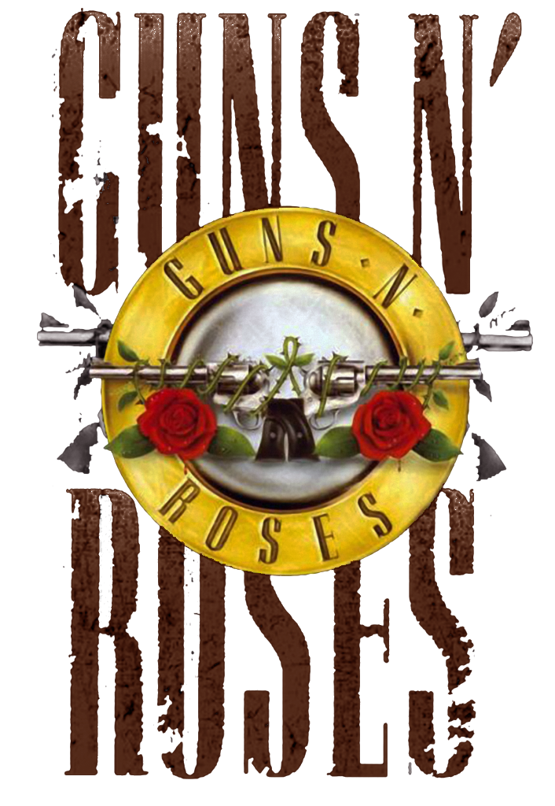

¿Dónde está el nuevo grupo que capture la imaginación de millones de adolescentes de todo el mundo y reine en la industria musical por encima de los productos prefabricados de la época?. Si nos fijamos qué grupos son capaces de congregar mayores cantidades de público hoy en día, nos damos cuenta de que son bandas muy veteranas las que actúan en los más grandes estadios: Rolling Stones, AC/DC, U2, etc., cabe preguntarse, ¿por qué hace ya tantos años que no surge una banda joven a la que podamos denominar La Banda, con mayúsculas, destinada a romper moldes y reinar en la industria durante una buena temporada, plantando cara a los veteranos dinosaurios ya establecidos?. Tendríamos que remontarnos a 1989, cuando ese papel icónico de reyes del rock fue ocupado por un atajo de desarrapados de Los Ángeles que ascendieron desde la nada más absoluta hasta la cima del negocio del espectáculo. Esta es la historia de cómo los Guns N’ Roses pasaron de tocar en tugurios y de dormir todos juntos en un garaje, viviendo del tráfico de drogas, de lo que podían gorronear a conocidos de una noche o del dinero que mendigaban en la puerta de los clubes nocturnos, a llenar estadios y arrebatarles el trono a los grandes grupos de rock a los que ellos mismos habían idolatrado. Esta es también la historia de cómo el éxito sembró el caos entre sus miembros, su desintegrando la historia de La Última Gran Banda.